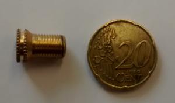

Fahrrad aufpumpen an der Tankstelle
13.10.2014
Wer öfter Fahrrad fährt fragt sich schon mal, warum es für Fahrradfahrer nichts Ähnliches wie Tankstellen gibt. Auch ein Fahrrad braucht ja Luft in den Reifen, die Kette muss mal geölt oder ein Reifen geflickt werden. Das dichte Tankstellennetz in Deutschlands Städten müsste doch eigentlich solche Leistungen zusätzlich anbieten, schließlich kann man auch an Fahrradfahrern Geld verdienen - der ein oder andere Radler kauft sicher auch noch einen der 500 Schokoriegel aus dem üppigen Fressaliensortiment des "Shops".
Ich musste mein Rad aufpumpen und die Luftpumpe zu Hause hat gestreikt. Kein Problem dachte ich, die Tankstelle gegenüber hat sicher einen Adapter für Fahrradventile. Auf meine freundliche Nachfrage habe ich eine typische Ruhrgebietsantwort erhalten: "Sowat ham wa hier nich. Brauch'n'se ne Fahrradpumpe für. Bekomm'se im Fahrradladen!" Der Tonfall war der, mit dem man einem Kleinkind die Welt erklärt.

Kurze Zeit später hatte ich mir dann einen eigenen Ventiladapter zugelegt. Das Teil hat grob die Größe einer 20-Cent-Münze, einen ähnlichen Preis und hat seitdem auch seinen festen Platz im Kleingeld-Fach meines Portemonnaies gefunden. Damit kann ich nun an jeder Tankstelle spontan Luft in die Reifen geben. Ich kann das jedem Radfahrer empfehlen, insbesondere wenn man sowieso eine Tankstelle in der Nähe hat.
Warum meine Tankstelle (zumal sie an einem vielgenutzten Radweg liegt) sowas nicht von alleine da hat oder verkauft ist mir weiterhin schleierhaft. Auch auf Grund oben beschriebener Reaktion vermute ich mal, dass es noch etwas dauern wird, bis da ein Umdenken einsetzt. Mobilität sollte doch ein Kerngeschäft von städtischen Tankstellen sein, und warum das nicht auf Fahrradfahrer ausweiten und so eine neue Kundengruppe hinzugewinnen?
Backlinks: 2014